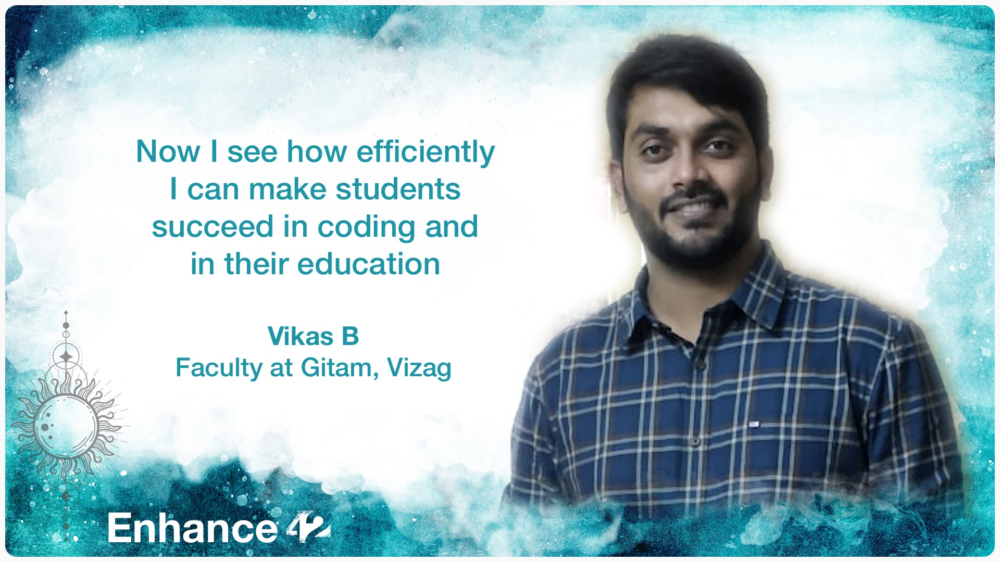
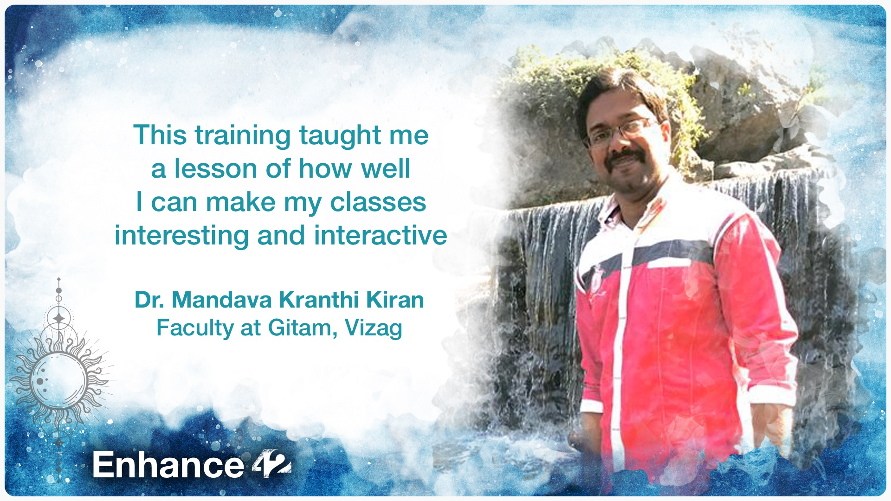

Foundation Track
Hi,
The Foundation track's goal is to nurture you to think like a computer scientist. Students gain expertise in computer science fundamentals and introduction to professional software development tools.
Python language is used as a medium to achieve this goal. The course's goal is to help establish sound mental models for programming concepts, which will unlock the ability to quickly learn more languages in the future.
This is a hands-on practice-based method for learning. More problems to solve and enough theory is covering the core concepts.
Weekly 3 days evening classes are conducted. To be part of this, you need to work minimum 2 hours daily. You need to have a computer with a stable internet connection.
No prior programming experience is required.
Hoping to meet you online in the program.
Regards,
Rohini Kumar Barla
rohinibarla.com
|
LinkedIn
Experiences of students

Here are some of the experiences of VIGNAN students who took 'Fundamentals of Computing' program in 2018, in their B.Tech 2nd semester.


Here is the experience of GITAM faculty members who have gone through training recently this year.
 